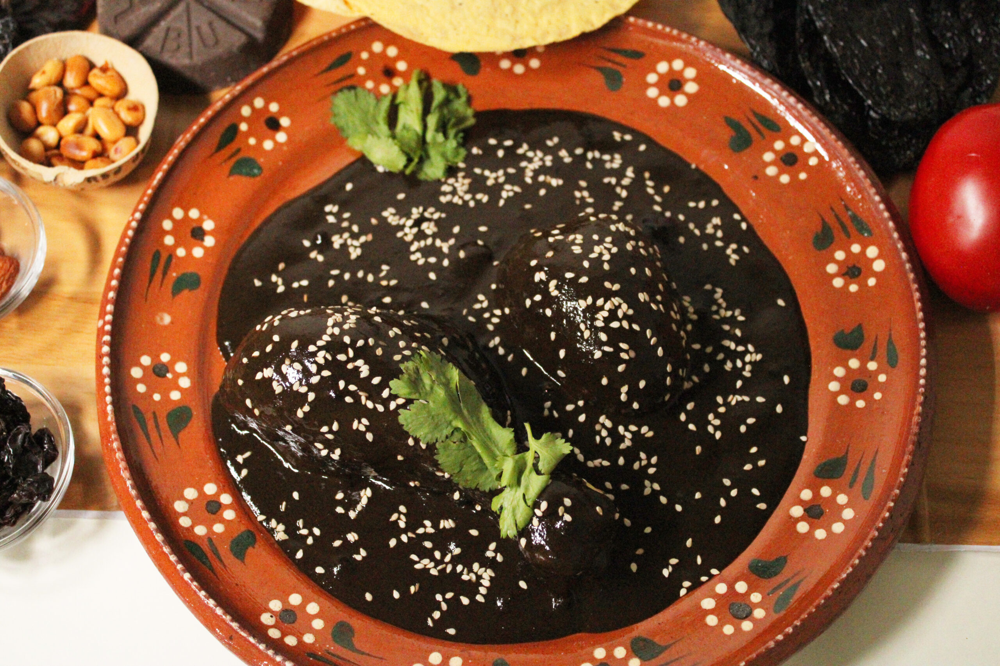
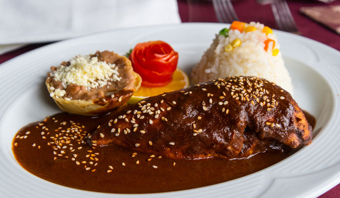
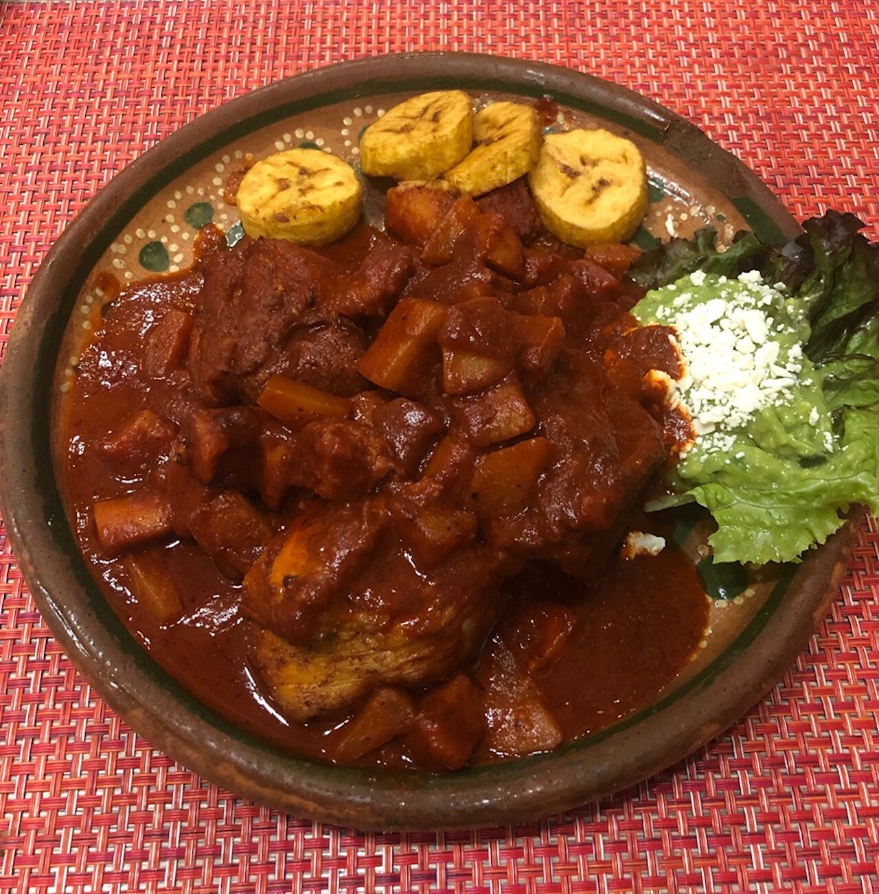
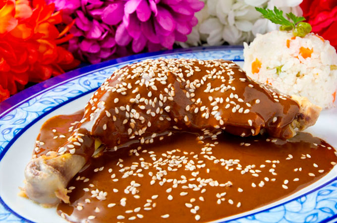
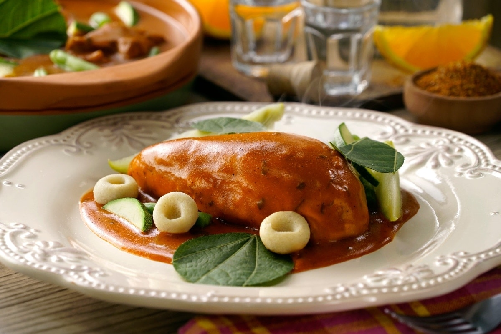
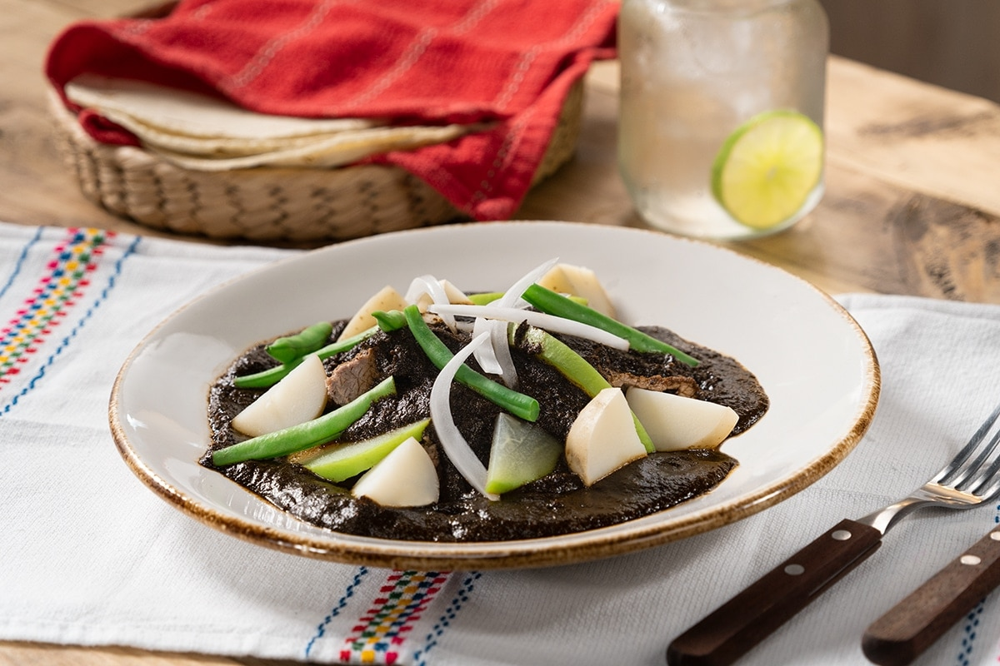
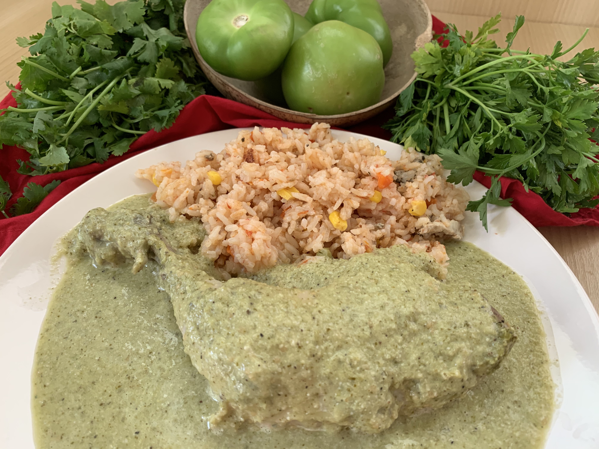

Mole Negro
Es el más complejo, lleva 34 ingredientes: 6 tipos de chiles tostados (chilhuacle negro, mulato, pasilla, ancho, guajillo y chipotle)
y sus semillas, ajo, plátano, jengibre, cebolla, jitomate, miltomate, clavo, pimienta negra y gorda, almendras, nueces, ajonjolí,
cacahuates, pan de manteca tostado, tortillas, mejorana, hoja de aguacate, orégano, tomillo, comino, canela, chocolate, azúcar y sal. Además de freirse con manteca de cerdo.

Mole Rojo
El mole rojo con pollo: es uno de los siete moles que se cocinan en Oaxaca, es el más picante de todos, el mole rojo se prepara
con los mismos ingredientes del mole negro, solo que para que sea mole rojo los chiles no se tuestan tanto y de esta manera al molerlos quedan con un color rojo.

Manchamanteles
En Oaxaca se hace con chiles guajillo y ancho a los que se suma el pasilla oaxaqueño para darle un toque más picante y ahumado, asimismo se le adiciona jitomate,
ajonjolí, cebolla, almendra, nuez, pasas, ajo, clavo, pimienta negra y gorda, canela, orégano y trozos de plátano macho y piña.

Mole Coloradito
El mole coloradito con carne de puerco, pollo o res: es de un tono “ladrillo” y se usan ingredientes como: chile ancho, chile pasilla,
jitomate, ajo, almendras, orégano y azúcar.

Mole Amarillo
este mole es de color amarillo gracias al chile chilhuacle amarillo y el toque distintivo del mole amarillo es que se sazona con
hoja santa, la cual perfuma el mole y le da un delicioso sabor anisado. Además como todo mole, es una combinación exquisita de
sabores picantes y dulces con notas anisadas y un punto especiado. Esta salsa es perfecta para servir con trozos de pollo o
puerco previamente cocido y acompañado por una combinación de chayote, ejotes y papas, espesado con masa de maíz todo esto cocido en el mole amarillo.

Mole Chichilo
El mole chichilo con carne de res y hojas de aguacate: su elaboración es la más “espectacular de todos” para hacerlo se usan ingredientes
como: chile pasilla, chile mulato, pimienta gorda, para darle el aroma característico de chile y cenizas se le pone al final hojas de aguacate.

Mole Verde
En Oaxaca acostumbran espesar el mole con masa de maíz. Gracias a los ingredientes que esta hecho este mole tiene un sabor herbal,
para hacerlo se necesita: chile verde, cebolla, ajo, comino, pimienta negra, perejil, tomate y jitomate verde, es decir no maduro.
Este mole se puede servir con pollo o carne de puerco, acompañado de chayotes, ejotes y frijol blanco. Es un platillo tradicional
de los pueblos circunvecinos de la región de los valles centrales.